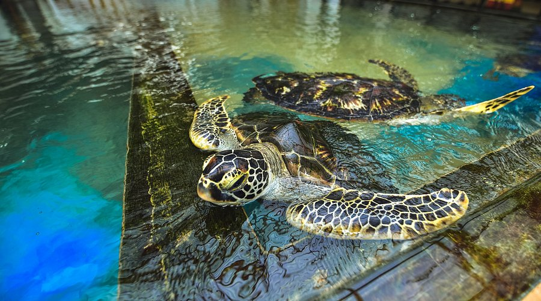

Key Attractions

Bentota Beach is the perfect spot for sunbathing, swimming, and taking leisurely walks along the golden coastline with picturesque sunsets.

Enjoy thrilling water sports including jet skiing, windsurfing, and banana boat rides in the crystal-clear waters of Bentota.

The Bentara River offers tranquil boat rides amidst lush greenery, perfect for nature lovers and bird watchers seeking serenity.

Brief Garden, the artistic estate of Bevis Bawa, features exotic landscaping, sculptures, and colorful tropical flowers to explore.

The Kosgoda Turtle Hatchery provides a unique opportunity to see sea turtles up close and learn about conservation efforts.